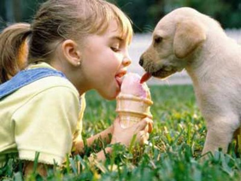

| Kimi insanla kimi insan arasındaki uzaklık,kimi insanla hayvan arasındaki uzaklık çok daha büyüktür ; |  | |||||||
Jopon balığı,aCarassius auratus ve türleri) balık türü Çaprazlama yöntemi ile farklı renklerde ve vücut yapısında çok çeşidi üretilmiştir. Japon balıklarının çoğu comet, shubunkin, suriye japonu gibi türler soğuk suda yaşayabilirler. Bulundukları akvaryumlarda tek cins olarak besleniyorlarsa ısıtıcıya ihtiyaç yoktur. Ama süslü japon balıkları için (oranda, ranchu, rykuin gibi) ıstıcıya ihtiyaç vardır, ısıtıcı suyu ısıtmak için değil ısının sabit kalması için önemli bir ekipmandır. Vahşi türevleri 4-30 derece arası yaşarken süslü türler 18-25 derece arası yaşayabilir.
Betta (Betta splendens), doğal yaşam alanı Asya(Tayland, Malezya, Kamboçya ve Vietnam) olan, yaklaşık 4-6 cm boyunda bir balıktürü. Özellikle erkeklerin yüzgeçlerinin görkem ve güzelliği, asaletini yansıtan vakur duruşuyla dikkat çeken bir türdür. BeslenmeCanlı yem betalarda renklerin daha canlı ve güzel olmasında etkilidir. Kuru yem de verilebilir. Bunun yanında belli aralıklarla (haftada bir kez uygundur) haşlanmış ıspanak verilmesi kabızlığı giderir. Betaların bağışıklık sistemleri içinse sarımsak oldukça etkilidir.
Lepistes ya da gupi, poeciliidae familyasından canlı yumurtlayabilen akvaryumlarda yetiştirilen tatlı su balığı. Anayurdu güney amerika olan lepistes günümüzde dünyanın hemen hemen her yerinde bulunur. Erkekleri renkli, dişileri ise sade olurlar. Düzgün beslendiği takdirde çok kolay bir biçimde ürerler .tropikal bölge canlısıdır, 25-28 derece sıcaklıkta beslenmesi gerekir. Yavrularını yediği için yumurtlamak için akvaryum içinde yüzebilen, içine su alabilen, ızgaralı, yavruluk diye tabir edilen kutucuklara hapsedilirler. Düzenli ve iyi beslenirlerse yavrularını yemezler. Akvaryum bol bitkili ise yavruluğa gerek kalmaz,doğan yavrular bitkilerin dibinde ve arasında saklanır, yaşamına devam ederler |
||||||||
 Palamut ise boyutuna göre13-70 t larası Palamut ise boyutuna göre13-70 t larası
Palamut (Sarda sarda), genellikle sıcak ve ılık denizlerde hem açıkta hem de kıyı bölgelerinde yaşayan kemikli balık türü. Oldukça büyük ve keskin dişlerle kaplı olan ağzı torpil biçimindeki bedeninin ucundadır. Sırtlarının genellikle mavimsi rengi, yanlara doğru gidildikçe karında gümüşi beyaza dönüşür. Sırtlarından başlarına kadar siyaha yakın koyu renkte birçok şerit bulunur. Büyük sürüler oluşturarak mevsimlik uzun göçlere girişir. |
||||||||
 Neon tetra 25tl-250tl arası Neon tetra 25tl-250tl arası
Neon tetra AkvaryumBarışçıl balıkların bulunduğu akvaryumlarda beslenmesi gereken, büyük balıklarla bir arada tutulmaması gereken bir balıktır. Akvaryumda orta ve alt seviyelerde yüzer. sürü balıklarıdır. Akvaryumlarda gruplar halinde beslenmeleri gerekir. En az sekizli grup halinde alınması gereklidir. Kardinal diye adlandırılan renkleri aynı ancak daha irice bir türü daha vardır. Su değerlerine karşı hassastırlar. Tüm Güney Amerikalı tatlı su balıkları gibi pH'sı düşük suyu severler. |
||||||||
 fiyatıları 10 tl-250 tl arası
fiyatıları 10 tl-250 tl arası Betta fiyatları 15tl-120 tl arsı
Betta fiyatları 15tl-120 tl arsı Lepistes fiyatları 10tl-100 tl arası
Lepistes fiyatları 10tl-100 tl arası